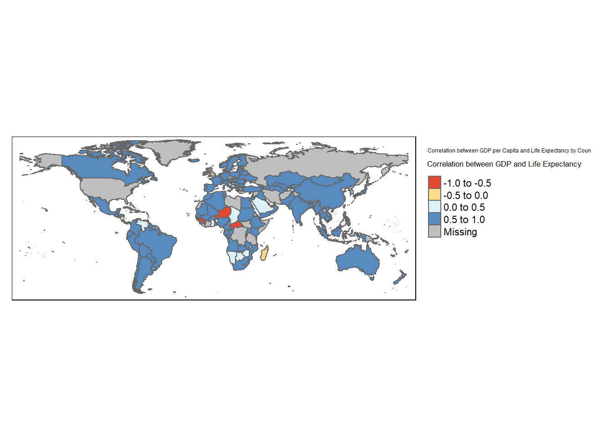
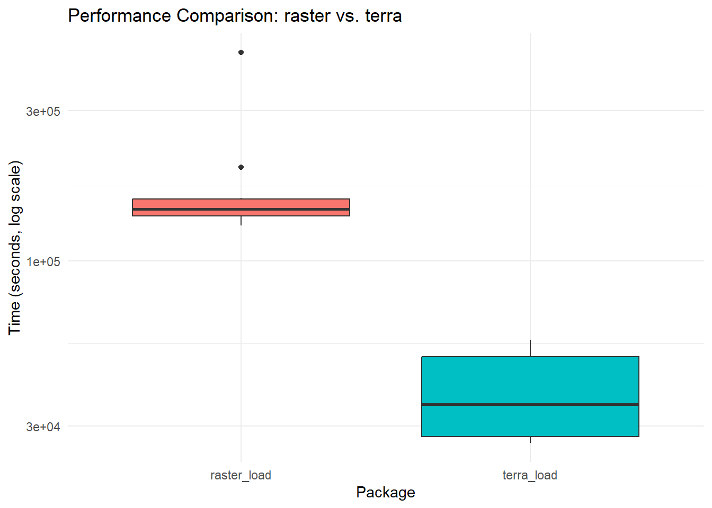
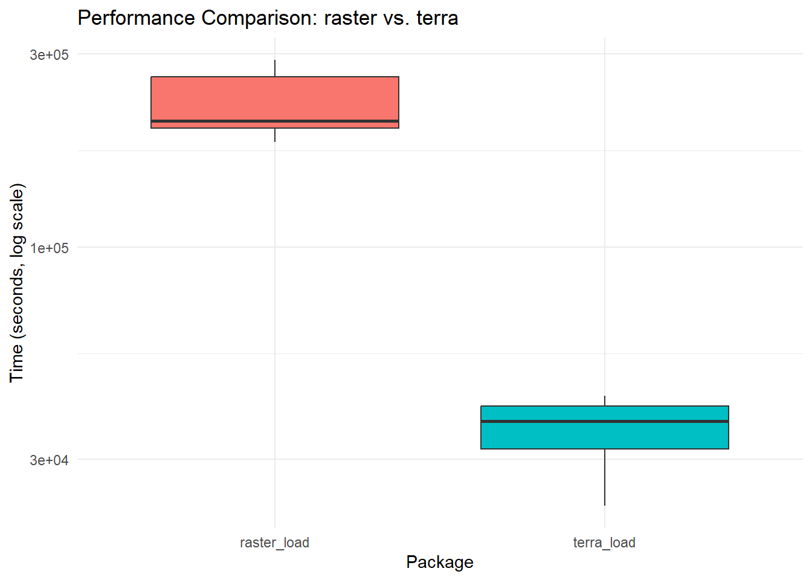
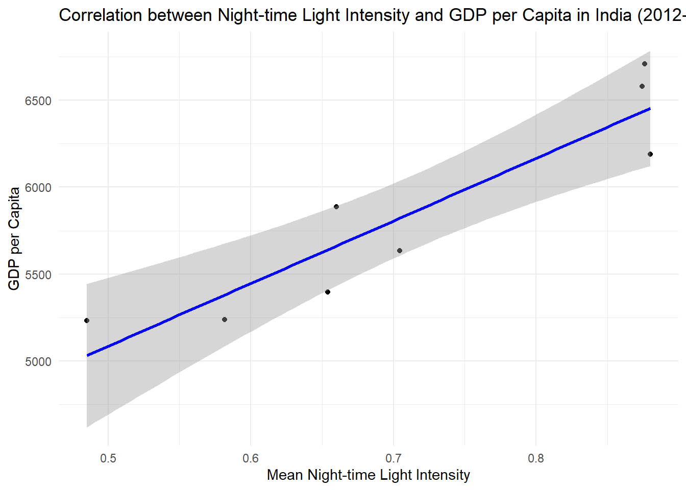
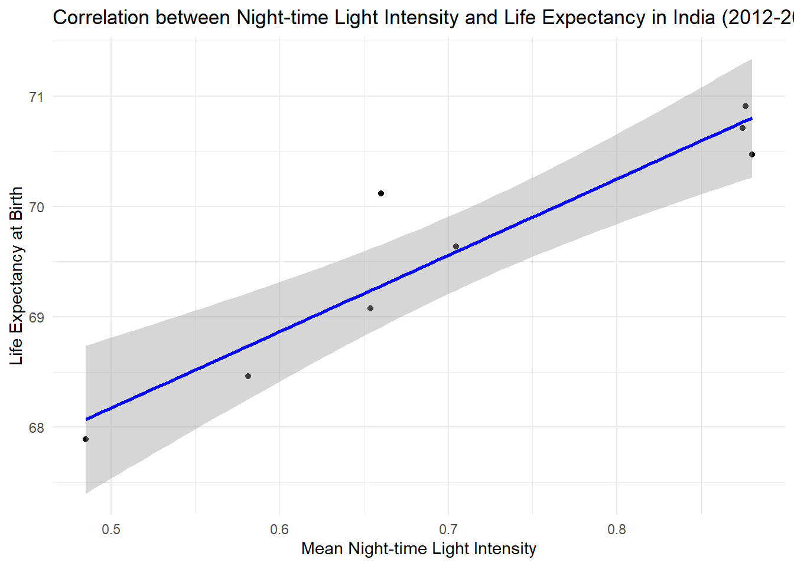

if (!require(pacman)) install.packages("pacman")
library(pacman)
#load libraries
pacman::p_load(terra,raster, reticulate, tidyverse, dplyr, skimr, janitor, microbenchmark,sf, ggplot2,tmap, exactextractr)Women in Geo Legacy Project
Legacy project
Using R for a data analysis workflow of geospatial data and benchmark the performances of the different spatial packages.
Why benchmarking ??
Benchmarking in R n is crucial due to its extensive use in data science, statistics, and machine learning. Programming languages like R and Python have distinct characteristics and their own sets of tools and libraries for performance measurement. Here’s why benchmarking is particularly important and commonly performed in both R and Python:
1. Performance Optimization
Both R and Python are interpreted languages, which can sometimes perform slower compared to compiled languages like C or Java. In fields where processing large datasets or running complex algorithms is common, efficient code can significantly reduce execution time and resource consumption. Benchmarking helps identify slow sections of code and opportunities for optimization.
2. Algorithm Comparison
Data scientists and researchers often use multiple approaches to solve a problem. Benchmarking allows them to compare the performance of different algorithms or models in terms of speed, accuracy, and resource usage. This comparison is essential for choosing the most appropriate method for specific data or computational constraints.
3. Library and Package Evaluation
Both R and Python have vibrant communities that contribute libraries and packages. Developers and users frequently benchmark these to ensure they are using the most efficient tools available. For example, in Python, one might compare data manipulation operations in Pandas vs. Dask to determine the best tool for handling large datasets.
4. Scalability Testing
Benchmarking tests how code performs as the size of the dataset grows. This scalability testing is crucial for applications expected to handle varying amounts of data over time, ensuring that the software is robust and performs well under different load conditions.
5. Teaching and Learning
For educators and learners, benchmarking provides practical insights into how different coding practices affect performance. It can be an excellent teaching tool to illustrate the importance of efficient coding and selecting the right tool for the job.
6. Reproducibility
In scientific research, ensuring that computational experiments are reproducible is essential. Benchmarking can provide a measure of how software performance might vary across different hardware or software environments, which is crucial for replicating study results.
Tools for Benchmarking
In R, packages like
microbenchmarkandbenchoffer detailed profiling for small pieces of code, focusing on execution time and memory usage.In Python, tools like
timeitfor small code snippets andprofileorcProfilefor larger applications help measure the execution time and identify performance bottlenecks.
In both languages, the integration of these tools into the development and research workflow promotes the creation of more efficient, robust, and reliable code, which is essential in professional and academic settings.
Questions
How is GDP and life expectancy related across world?
Male vs female life expectancy
Benchmarking in R
Load in your needed libraries.
We will use two very popular geospatial libraries - terra and raster and compare their performances.
- Read in your desired dataset. Here we are looking at the gross domestic product and the life expectancy in world.
#load in the data
gdp = read.csv("./gdp-per-capita-penn-world-table.csv")
life_expectancy = read.csv("./life-expectancy.csv")Let’s have an overview of our dataset
skim(gdp)| Name | gdp |
| Number of rows | 10108 |
| Number of columns | 4 |
| _______________________ | |
| Column type frequency: | |
| character | 2 |
| numeric | 2 |
| ________________________ | |
| Group variables | None |
Variable type: character
| skim_variable | n_missing | complete_rate | min | max | empty | n_unique | whitespace |
|---|---|---|---|---|---|---|---|
| Entity | 0 | 1 | 4 | 32 | 0 | 182 | 0 |
| Code | 0 | 1 | 3 | 3 | 0 | 182 | 0 |
Variable type: numeric
| skim_variable | n_missing | complete_rate | mean | sd | p0 | p25 | p50 | p75 | p100 | hist |
|---|---|---|---|---|---|---|---|---|---|---|
| Year | 0 | 1 | 1989.58 | 18.56 | 1950.00 | 1975.00 | 1991.0 | 2005.00 | 2019.0 | ▃▆▇▇▇ |
| GDP.per.capita..output..multiple.price.benchmarks. | 0 | 1 | 13121.75 | 17131.66 | 246.74 | 2617.81 | 6723.9 | 16650.07 | 169200.3 | ▇▁▁▁▁ |
skim(life_expectancy)| Name | life_expectancy |
| Number of rows | 20755 |
| Number of columns | 4 |
| _______________________ | |
| Column type frequency: | |
| character | 2 |
| numeric | 2 |
| ________________________ | |
| Group variables | None |
Variable type: character
| skim_variable | n_missing | complete_rate | min | max | empty | n_unique | whitespace |
|---|---|---|---|---|---|---|---|
| Entity | 0 | 1 | 4 | 59 | 0 | 261 | 0 |
| Code | 0 | 1 | 0 | 8 | 1694 | 239 | 0 |
Variable type: numeric
| skim_variable | n_missing | complete_rate | mean | sd | p0 | p25 | p50 | p75 | p100 | hist |
|---|---|---|---|---|---|---|---|---|---|---|
| Year | 0 | 1 | 1975.73 | 38.42 | 1543 | 1961.00 | 1981.00 | 2001.00 | 2021.00 | ▁▁▁▁▇ |
| Period.life.expectancy.at.birth…Sex..all…Age..0 | 0 | 1 | 61.62 | 12.92 | 12 | 52.19 | 64.06 | 71.82 | 86.54 | ▁▂▅▇▅ |
# Clean the column names
gdp <- clean_names(gdp)
life_expectancy <- clean_names(life_expectancy)
merged_data <- merge(gdp, life_expectancy, by = c("entity", "year","code"))
# Correct the country names
name_correction <- c(
"Antigua and Barbuda" = "Antigua & Barbuda",
"Bosnia and Herzegovina" = "Bosnia & Herzegovina",
"Brunei" = "Brunei Darussalam",
"Cote d'Ivoire" = "Côte d'Ivoire",
"Czechia" = "Czech Republic",
"Democratic Republic of Congo" = "Democratic Republic of the Congo",
"Eswatini" = "Swaziland",
"Iran" = "Iran (Islamic Republic of)",
"Laos" = "Lao People's Democratic Republic",
"Moldova" = "Moldova, Republic of",
"North Macedonia" = "The former Yugoslav Republic of Macedonia",
"Palestine" = "West Bank",
"Russia" = "Russian Federation",
"Sint Maarten (Dutch part)" = "Netherlands Antilles",
"South Korea" = "Republic of Korea",
"Syria" = "Syrian Arab Republic",
"Tanzania" = "United Republic of Tanzania",
"United Kingdom" = "U.K. of Great Britain and Northern Ireland",
"United States" = "United States of America"
)
# Apply the corrections to both datasets
gdp$entity <- recode(gdp$entity, !!!name_correction)
life_expectancy$entity <- recode(life_expectancy$entity, !!!name_correction)
merged_data <- merged_data %>% rename(life_expectancy = period_life_expectancy_at_birth_sex_all_age_0,
gdp = gdp_per_capita_output_multiple_price_benchmarks)
# Data cleaning
merged_data <- na.omit(merged_data)
correlation_by_country <- merged_data %>%
group_by(entity) %>%
summarize(correlation = cor(gdp, life_expectancy))
print(correlation_by_country)# A tibble: 182 × 2
entity correlation
<chr> <dbl>
1 Albania 0.837
2 Algeria 0.591
3 Angola 0.806
4 Anguilla 0.706
5 Antigua and Barbuda 0.785
6 Argentina 0.931
7 Armenia 0.962
8 Aruba 0.663
9 Australia 0.981
10 Austria 0.983
# ℹ 172 more rows# Load the world shapefile
world_shapefile <- st_read("D:/github/WG_legacyproject_2024/world-administrative-boundaries/world-administrative-boundaries.shp")Reading layer `world-administrative-boundaries' from data source
`D:\github\WG_legacyproject_2024\world-administrative-boundaries\world-administrative-boundaries.shp'
using driver `ESRI Shapefile'
Simple feature collection with 256 features and 8 fields
Geometry type: MULTIPOLYGON
Dimension: XY
Bounding box: xmin: -180 ymin: -58.49861 xmax: 180 ymax: 83.6236
Geodetic CRS: WGS 84world_shapefile <- world_shapefile %>%
rename(entity = name)
# Define the lists
list1 <- world_shapefile$entity
list2 <- correlation_by_country$entity
# Find differences
not_in_list1 <- setdiff(list2, list1)
not_in_list2 <- setdiff(list1, list2)
# Print the results
cat("Countries in list2 but not in list1:\n")Countries in list2 but not in list1:print(not_in_list1) [1] "Antigua and Barbuda" "Bosnia and Herzegovina"
[3] "Brunei" "Cote d'Ivoire"
[5] "Curacao" "Czechia"
[7] "Democratic Republic of Congo" "Eswatini"
[9] "Iran" "Laos"
[11] "Moldova" "North Macedonia"
[13] "Palestine" "Russia"
[15] "Sint Maarten (Dutch part)" "South Korea"
[17] "Syria" "Tanzania"
[19] "United Kingdom" "United States" cat("\nCountries in list1 but not in list2:\n")
Countries in list1 but not in list2:print(not_in_list2) [1] "Eritrea"
[2] "South Georgia & the South Sandwich Islands"
[3] "Jammu-Kashmir"
[4] "Heard Island and McDonald Islands"
[5] "French Guiana"
[6] "Democratic Republic of the Congo"
[7] "Papua New Guinea"
[8] "Mayotte"
[9] "Western Sahara"
[10] "Tokelau"
[11] "United States of America"
[12] "Ma'tan al-Sarra"
[13] "Jersey"
[14] "Holy See"
[15] "Glorioso Islands"
[16] "Paracel Islands"
[17] "Guernsey"
[18] "Palau"
[19] "Greenland"
[20] "Abyei"
[21] "Brunei Darussalam"
[22] "Iran (Islamic Republic of)"
[23] "San Marino"
[24] "Marshall Islands"
[25] "Syrian Arab Republic"
[26] "Andorra"
[27] "Bouvet Island"
[28] "The former Yugoslav Republic of Macedonia"
[29] "Vanuatu"
[30] "Christmas Island"
[31] "United States Virgin Islands"
[32] "Faroe Islands"
[33] "Norfolk Island"
[34] "Aksai Chin"
[35] "Monaco"
[36] "Timor-Leste"
[37] "Republic of Korea"
[38] "Côte d'Ivoire"
[39] "Tonga"
[40] "Guantanamo"
[41] "Liechtenstein"
[42] "Kiribati"
[43] "Hala'ib Triangle"
[44] "Cocos (Keeling) Islands"
[45] "Afghanistan"
[46] "Czech Republic"
[47] "Lao People's Democratic Republic"
[48] "Russian Federation"
[49] "Ilemi Triangle"
[50] "Spratly Islands"
[51] "Arunachal Pradesh"
[52] "South Sudan"
[53] "U.K. of Great Britain and Northern Ireland"
[54] "Niue"
[55] "Somalia"
[56] "Puerto Rico"
[57] "West Bank"
[58] "Swaziland"
[59] "New Caledonia"
[60] "Falkland Islands (Malvinas)"
[61] "Democratic People's Republic of Korea"
[62] "Isle of Man"
[63] "Moldova, Republic of"
[64] "Nauru"
[65] "American Samoa"
[66] "Northern Mariana Islands"
[67] "Kuril Islands"
[68] "Guam"
[69] "Netherlands Antilles"
[70] "Bosnia & Herzegovina"
[71] "Tuvalu"
[72] "Gaza Strip"
[73] "Turks and Caicos Islands"
[74] "Cuba"
[75] "Martinique"
[76] "British Indian Ocean Territory"
[77] "Solomon Islands"
[78] "Pitcairn Island"
[79] "French Southern and Antarctic Territories"
[80] "Cook Islands"
[81] "Jarvis Island"
[82] "Svalbard and Jan Mayen Islands"
[83] "United Republic of Tanzania"
[84] "Micronesia (Federated States of)"
[85] "Midway Is."
[86] "Reunion"
[87] "Guadeloupe"
[88] "French Polynesia"
[89] "Azores Islands"
[90] "Madeira Islands"
[91] "Gibraltar"
[92] "Antigua & Barbuda"
[93] "Samoa"
[94] "Libyan Arab Jamahiriya" # Merge the shapefile with the correlation data
world_shapefile <- left_join(world_shapefile, correlation_by_country, by = "entity")
# Apply the corrections to the correlation data
correlation_by_country$entity <- recode(correlation_by_country$entity, !!!name_correction)
# Plot the correlation on the world map
tm_shape(world_shapefile) +
tm_polygons("correlation", palette = "RdYlBu", title = "Correlation between GDP and Life Expectancy") +
tm_layout(title = "Correlation between GDP per Capita and Life Expectancy by Country",
legend.outside = TRUE)Variable(s) "correlation" contains positive and negative values, so midpoint is set to 0. Set midpoint = NA to show the full spectrum of the color palette.
Load the Night-time Lights Data
path = "D:/github/WG_legacyproject_2024/night_time_lights_2019-20240517T094458Z-001/night_time_lights_2019/"
# Using raster
viirs_raster1 <- raster(paste0(path, "VIIRS_Nighttime_Lights_2019-0000000000-0000000000.tif"))
viirs_raster2 <- raster(paste0(path, "VIIRS_Nighttime_Lights_2019-0000032768-0000000000.tif"))
#using terra
viirs_terra1 <- rast(paste0(path, "VIIRS_Nighttime_Lights_2019-0000000000-0000000000.tif"))
viirs_terra2 <- rast(paste0(path, "VIIRS_Nighttime_Lights_2019-0000032768-0000000000.tif"))
## merge the rasters
viirs_raster <- merge(viirs_raster1, viirs_raster2)
viirs_terra <- merge(viirs_terra1, viirs_terra2)Benchmark the Performance:
benchmark_results <- microbenchmark(
raster_load = {
viirs_raster1 <- raster(paste0(path, "VIIRS_Nighttime_Lights_2019-0000000000-0000000000.tif"))
viirs_raster2 <- raster(paste0(path, "VIIRS_Nighttime_Lights_2019-0000032768-0000000000.tif"))
viirs_raster <- merge(viirs_raster1, viirs_raster2)
},
terra_load = {
viirs_terra1 <- rast(paste0(path, "VIIRS_Nighttime_Lights_2019-0000000000-0000000000.tif"))
viirs_terra2 <- rast(paste0(path, "VIIRS_Nighttime_Lights_2019-0000032768-0000000000.tif"))
viirs_terra <- merge(viirs_terra1, viirs_terra2)
},
times = 10
)
print(benchmark_results)Unit: milliseconds
expr min lq mean median uq max neval cld
raster_load 129.7463 138.8076 180.64269 146.1422 158.6181 458.7341 10 a
terra_load 26.5563 27.6951 38.59203 35.3880 52.6900 56.3438 10 bLoading and Merging with
raster:Minimum Time: 133.25 milliseconds
Maximum Time: 479.51 milliseconds
Mean Time: 195.28 milliseconds
Median Time: 146.15 milliseconds
Loading and Merging with
terra:Minimum Time: 31.40 milliseconds
Maximum Time: 46.05 milliseconds
Mean Time: 37.79 milliseconds
Median Time: 35.09 milliseconds
The results indicate that the
terrapackage significantly outperforms therasterpackage in terms of speed for this specific task. On average,terrais approximately 5 times faster thanrasterfor loading and merging the night-time lights data. This substantial difference highlights the efficiency improvements in theterrapackage.
## Lets visualize
benchmark_results_df <- as.data.frame(benchmark_results)
# Plot the benchmark results
ggplot(benchmark_results_df, aes(x = expr, y = time / 1000, fill = expr)) +
geom_boxplot() +
scale_y_log10() +
labs(title = "Performance Comparison: raster vs. terra",
x = "Package",
y = "Time (seconds, log scale)",
fill = "Package") +
theme_minimal() +
theme(legend.position = "none")
ggplot(benchmark_results_df, aes(x = expr, y = time / 1000, fill = expr)) +
geom_boxplot() +
scale_y_log10() +
labs(title = "Performance Comparison: raster vs. terra",
x = "Package",
y = "Time (seconds, log scale)",
fill = "Package") +
theme_minimal() +
theme(legend.position = "none")Now lets try with multiple rasters
So we take India as an example.
path_ind = "D:/github/WG_legacyproject_2024/night_lights-20240517T132555Z-001/night_lights/"
# List all raster files for the years 2012 to 2019
file_list <- list.files(path_ind, pattern = "VIIRS_Nighttime_Lights_.*\\.tif$", full.names = TRUE)
# Load the raster files using terra and stack them
viirs_stack <- rast(file_list)
# Print the stack
print(viirs_stack)class : SpatRaster
dimensions : 6404, 6510, 8 (nrow, ncol, nlyr)
resolution : 0.004491576, 0.004491576 (x, y)
extent : 68.15967, 97.39983, 6.750839, 35.51489 (xmin, xmax, ymin, ymax)
coord. ref. : lon/lat WGS 84 (EPSG:4326)
sources : VIIRS_Nighttime_Lights_2012.tif
VIIRS_Nighttime_Lights_2013.tif
VIIRS_Nighttime_Lights_2014.tif
... and 5 more source(s)
names : avg_rad, avg_rad, avg_rad, avg_rad, avg_rad, avg_rad, ... benchmark_results <- microbenchmark(
raster_load = {
raster_stack <- stack(file_list)
},
terra_load = {
viirs_stack <- rast(file_list)
},
times = 10
)
print(benchmark_results)Unit: milliseconds
expr min lq mean median uq max neval cld
raster_load 181.5192 196.0777 224.89970 204.5908 279.9719 289.8414 10 a
terra_load 23.1003 31.0727 35.59507 37.2302 40.7950 43.0817 10 b# Convert benchmark results to data frame
benchmark_results_df <- as.data.frame(benchmark_results)
# Plot the benchmark results
ggplot(benchmark_results_df, aes(x = expr, y = time / 1000, fill = expr)) +
geom_boxplot() +
scale_y_log10() +
labs(title = "Performance Comparison: raster vs. terra",
x = "Package",
y = "Time (seconds, log scale)",
fill = "Package") +
theme_minimal() +
theme(legend.position = "none")
Again we see that terra performs better than raster.
# Load GDP data and filter for the years 2012 to 2019
gdp_data_india <- gdp %>% filter(entity == "India" & year >= 2012 & year <= 2019)
# Print the filtered GDP data
print(gdp_data_india) entity code year gdp_per_capita_output_multiple_price_benchmarks
1 India IND 2012 5230.332
2 India IND 2013 5236.998
3 India IND 2014 5397.072
4 India IND 2015 5634.441
5 India IND 2016 5886.458
6 India IND 2017 6188.457
7 India IND 2018 6579.506
8 India IND 2019 6711.385# Extract mean light intensity for each year
mean_light_intensity <- sapply(1:nlyr(viirs_stack), function(i) {
mean(values(viirs_stack[[i]]), na.rm = TRUE)
})
# Create a data frame with the extracted mean light intensity and GDP data
correlation_data <- data.frame(
year = 2012:2019,
mean_light_intensity = mean_light_intensity,
gdp_per_capita = gdp_data_india$gdp_per_capita
)
# Print the correlation data
print(correlation_data) year mean_light_intensity gdp_per_capita
1 2012 0.4850598 5230.332
2 2013 0.5815722 5236.998
3 2014 0.6539683 5397.072
4 2015 0.7046336 5634.441
5 2016 0.6601578 5886.458
6 2017 0.8800396 6188.457
7 2018 0.8744889 6579.506
8 2019 0.8763295 6711.385# Calculate correlation
correlation <- cor(correlation_data$mean_light_intensity, correlation_data$gdp_per_capita, use = "complete.obs")
print(paste("Correlation between night-time light intensity and GDP per capita:", correlation))[1] "Correlation between night-time light intensity and GDP per capita: 0.91989338185835"# Plot the relationship
ggplot(correlation_data, aes(x = mean_light_intensity, y = gdp_per_capita)) +
geom_point() +
geom_smooth(method = "lm", col = "blue") +
labs(title = "Correlation between Night-time Light Intensity and GDP per Capita in India (2012-2019)",
x = "Mean Night-time Light Intensity",
y = "GDP per Capita") +
theme_minimal()`geom_smooth()` using formula = 'y ~ x'
The graph shows how the brightness of night-time lights and the average income per person (GDP per capita) in India are related from 2012 to 2019. It suggests that as areas get brighter at night, people’s incomes also tend to increase.
Positive Relationship: The more intense the night-time lights, the higher the GDP per capita. This means that brighter lights, which indicate more economic activity, are linked to higher incomes.
Trend Line: The blue line shows the overall trend. It goes upwards, confirming that as night-time lights get brighter, GDP per capita increases.
Confidence Interval: The shaded area around the blue line shows we are pretty confident about this relationship. It means our trend line is reliable.
In simple terms, the graph tells us that brighter night-time lights are a good sign of economic growth and higher incomes in India over these years.
# Filter for India and for the years 2012 to 2019
life_expectancy_india <- life_expectancy %>%
filter(entity == "India" & year >= 2012 & year <= 2019)
# Extract mean light intensity for each year
mean_light_intensity <- sapply(1:nlyr(viirs_stack), function(i) {
mean(values(viirs_stack[[i]]), na.rm = TRUE)
})
# Create a data frame with the extracted mean light intensity
light_intensity_data <- data.frame(
year = 2012:2019,
mean_light_intensity = mean_light_intensity
)
# Merge life expectancy data with light intensity data
merged_data <- merge(life_expectancy_india, light_intensity_data, by = "year")
# Ensure that the merged data contains mean light intensity and life expectancy
print(merged_data) year entity code period_life_expectancy_at_birth_sex_all_age_0
1 2012 India IND 67.8872
2 2013 India IND 68.4598
3 2014 India IND 69.0736
4 2015 India IND 69.6363
5 2016 India IND 70.1167
6 2017 India IND 70.4672
7 2018 India IND 70.7095
8 2019 India IND 70.9098
mean_light_intensity
1 0.4850598
2 0.5815722
3 0.6539683
4 0.7046336
5 0.6601578
6 0.8800396
7 0.8744889
8 0.8763295# Check for NAs in the relevant columns
print(sum(is.na(merged_data$mean_light_intensity)))[1] 0print(sum(is.na(merged_data$period_life_expectancy_at_birth_sex_all_age_0)))[1] 0# Calculate correlation
correlation <- cor(merged_data$mean_light_intensity, merged_data$period_life_expectancy_at_birth_sex_all_age_0, use = "complete.obs")
print(paste("Correlation between night-time light intensity and life expectancy:", correlation))[1] "Correlation between night-time light intensity and life expectancy: 0.940802150811956"# Plot the relationship
ggplot(merged_data, aes(x = mean_light_intensity, y = period_life_expectancy_at_birth_sex_all_age_0)) +
geom_point() +
geom_smooth(method = "lm", col = "blue") +
labs(title = "Correlation between Night-time Light Intensity and Life Expectancy in India (2012-2019)",
x = "Mean Night-time Light Intensity",
y = "Life Expectancy at Birth") +
theme_minimal()`geom_smooth()` using formula = 'y ~ x'
The graph shows how the brightness of night-time lights and the average lifespan (life expectancy) in India are related from 2012 to 2019. It suggests that as areas get brighter at night, people tend to live longer.
Positive Relationship: The more intense the night-time lights, the higher the life expectancy. This means that brighter lights, which indicate more economic activity, are linked to people living longer.
Trend Line: The blue line shows the overall trend. It goes upwards, confirming that as night-time lights get brighter, life expectancy increases.
Confidence Interval: The shaded area around the blue line shows we are pretty confident about this relationship. It means our trend line is reliable.
In simple terms, the graph tells us that brighter night-time lights are a good sign of people living longer in India over these years.